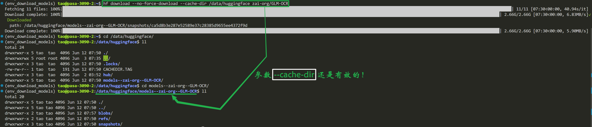
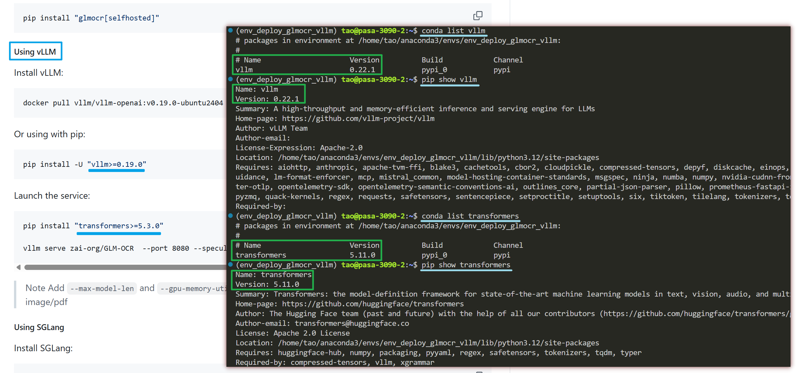
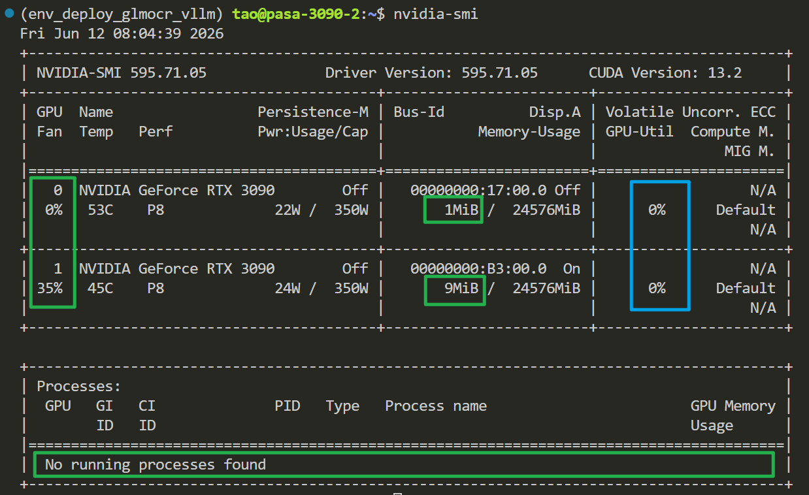
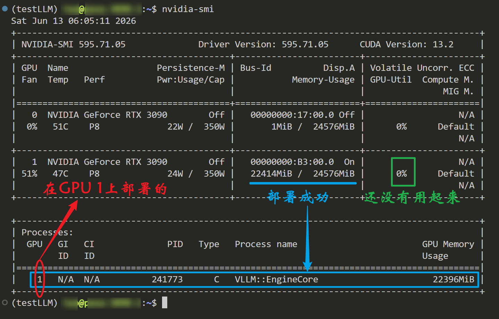

Original post date: 2026-06-13 15:00:49
About ME: Homepage
相关链接: CUDA 基础与 JIT 编译环境笔记
目 录
主要步骤1. 准备下载模型文件的环境（Huggingface通用）2. 准备部署模型的环境（GLM-OCR专用）3. 开始部署模型（单卡 v.s. 多卡）单卡部署多卡部署附加收获GLM-OCR 使用 vLLM 部署时 FlashInfer JIT 编译失败的排查与解决一、问题背景二、问题定位过程1. 确认 PyTorch 使用的 CUDA 版本2. 确认当前环境缺少 nvcc三、解决方法1. 安装与当前 PyTorch CUDA 版本匹配的 nvcc2. 检查 CUDA 头文件是否存在3. 设置 CUDA 编译和链接环境变量4. 清除之前失败的 FlashInfer 编译缓存5. 重新启动 GLM-OCR四、问题本质总结五、下次遇到类似问题时的快速检查
下载模型文件的环境（Huggingface通用）Step 1 新开一个终端，新建一个虚拟环境
conda create -n env_download_models python=3.12
Step 2 下载huggingface的必要包
激活专门用来下载模型文件的虚拟环境：conda activate env_download_models
pip install huggingface_hub🟢 （这个下载的版本应该是1.0+）
登录命令：hf auth login
pip install huggingface_hub==0.36.0🔴（旧版：deprecated）
登录命令：huggingface-cli login🔴 （旧版：deprecated）
Step 3 登录huggingface官方网页并创建write类型token
huggingface token: xxxxxxxxx
Step 4 终端登录命令（输入token）
hf auth login🟢 → 输入token
Step 5 下载模型文件
新版下载模型文件的命令
hf download --no-force-download --cache-dir /data/huggingface zai-org/GLM-OCR 🟢
hf download 代替了 huggingface-cli download
--no-force-download（默认的，不写也可以） 代替了 --resume-download
旧版下载模型文件的命令
huggingface-cli download --resume-download --cache-dir /data/huggingface zai-org/GLM-OCR 🔴（旧版：deprecated）
huggingface-cli download --resume-download --cache-dir /data/huggingface google/gemma-3-4b-it

要保留
models--{组织名}--{模型名}这种 Hugging Face 默认的缓存目录结构，同时将其存放在你指定的自定义路径下，你应该使用--cache-dir参数来代替--local-dir。
部署模型的环境（GLM-OCR专用）Step 1 新开一个终端，新建一个虚拟环境
conda create -n env_deploy_glmocr_vllm python=3.12
Step 2 激活虚拟环境 & 安装适配的vllm
conda activate env_deploy_glmocr_vllm
pip install vllm --extra-index-url https://wheels.vllm.ai/nightly
Step 3 安装指定的transformers（Git - GLM-OCR）
pip install "transformers>=5.3.0"

部署模型（单卡 v.s. 多卡）
部署前看看GPU使用情况： nvidia-smi
配置 on GPU1 tmux_session: tmux_glmocr_GPU1 + cuda_id: 1 + port: 9001
Step 1 新建一个后台终端（tmux）
tmux new -s tmux_glmocr_GPU1
Step 2 激活部署LLMs的环境
conda activate env_deploy_glmocr_vllm
Step 3 指定GPU的id
export CUDA_VISIBLE_DEVICES=1 （故意指定用第2张卡，第1张卡的id是0，过会验证一下这个命令是不是真的有效了）
Step 4 指定端口部署模型（这里是9001端口）
xxxxxxxxxx11vllm serve /data/huggingface/models--zai-org--GLM-OCR/snapshots/ca5d8b3e287e52589e37c28385d9655ee4372f9d --allowed-local-media-path / --port 9001 --speculative-config '{"method": "mtp", "num_speculative_tokens": 1}' --served-model-name glm-ocr
配置 on GPU0 tmux_session: tmux_glmocr_GPU0 + cuda_id: 0 + port: 9000
...(模仿步骤)
测试 在服务器上访问
1 看看当前的GPU信息

部署成功看看GPU使用情况： nvidia-smi
2 再开一个终端，新建一个虚拟环境，安装openai库
conda create -n testLLM python=3.12
pip install openai
3 编写测试程序，测试GLM-OCR模型（识别本地文件夹 — GLMOCR_Pic —中的图片）
测试直接读取本地文件（.png）
xxxxxxxxxx261from openai import OpenAI2
3client = OpenAI(4 base_url="http://localhost:9001/v1",5 api_key="EMPTY"6)7
8response = client.chat.completions.create(9 model="glm-ocr",10 messages=[11 {12 "role": "user",13 "content": [14 {"type": "text", "text": "请识别这张图片"},15 {16 "type": "image_url",17 "image_url": {18 "url": "file://GLMOCR_Pic/EvoPrompt_pdf_page_1.png" # 注意这个地址，GLMOCR_Pic是GLM-OCR模型所在机器的本地文件夹19 }20 }21 ]22 }23 ]24)25
26print(response)
测试 在用户本地访问
xxxxxxxxxx501import base642import requests3from openai import OpenAI4
5"""6注意：这里的base_url写的是ip地址加端口号，意味着它是在远程服务器上。7所以，在传文件的时候，远程服务器是读取不到本地文件的，8即，使用本程序时，必须做到本地文件先转换成base64字符串，然后通过HTTP请求发送给远程服务器上的GLM-OCR服务进行处理。9"""10
11# 1. 初始化客户端，指向你的远程部署GLM-OCR的服务器地址12client = OpenAI(13 base_url="http://IP_Address:9001/v1", 14 api_key="EMPTY" # 本地部署不需要真实 API key15)16
17# 2. 将本地图片转换为 Base64 编码的函数18def encode_image(image_path):19 with open(image_path, "rb") as image_file:20 return base64.b64encode(image_file.read()).decode('utf-8')21
22image_path = "./Prj_GLMOCR/test_page_1.png" # # 注意这个地址，Prj_GLMOCR是使用者的本地文件夹（GLM-OCR在远端服务器）23base64_image = encode_image(image_path)24
25# 3. 构造请求，发送图文多模态数据26response = client.chat.completions.create(27 model="glm-ocr", # 必须与你启动时的 --served-model-name 一致28 messages=[29 {30 "role": "user",31 "content": [32 {33 "type": "text",34 "text": "请提取这张图片中的所有文字。" # 你的提示词35 },36 {37 "type": "image_url",38 "image_url": {39 "url": f"data:image/jpeg;base64,{base64_image}"40 }41 }42 ]43 }44 ],45 max_tokens=1024,46 temperature=0.247)48
49# 4. 打印结果50print(response.choices[0].message.content)
xxxxxxxxxx71vllm serve /data/huggingface/models--zai-org--GLM-OCR/snapshots/ca5d8b3e287e52589e37c28385d9655ee4372f9d \2--host 0.0.0.0 \3--port 30000 \4--speculative-config '{"method": "mtp", "num_speculative_tokens": 2}' \5--served-model-name glm-ocr \6--data-parallel-size 2 \7--api-server-count 22张GPU
局域网内的其他终端均可访问。
测试 在用户本地访问
xxxxxxxxxx501import base642import requests3from openai import OpenAI4
5"""6注意：这里的base_url写的是ip地址加端口号，意味着它是在远程服务器上。7所以，在传文件的时候，远程服务器是读取不到本地文件的，8即，使用本程序时，必须做到本地文件先转换成base64字符串，然后通过HTTP请求发送给远程服务器上的GLM-OCR服务进行处理。9"""10
11# 1. 初始化客户端，指向你的远程部署GLM-OCR的服务器地址12client = OpenAI(13 base_url="http://IP_Address:30000/v1", 14 api_key="EMPTY" # 本地部署不需要真实 API key15)16
17# 2. 将本地图片转换为 Base64 编码的函数18def encode_image(image_path):19 with open(image_path, "rb") as image_file:20 return base64.b64encode(image_file.read()).decode('utf-8')21
22image_path = "./GLMOCR_Pic/EvoPrompt_pdf_page_1.png" # # 注意这个地址，GLMOCR_Pic是使用者的本地文件夹（GLM-OCR在远端服务器）23base64_image = encode_image(image_path)24
25# 3. 构造请求，发送图文多模态数据26response = client.chat.completions.create(27 model="glm-ocr", # 必须与你启动时的 --served-model-name 一致28 messages=[29 {30 "role": "user",31 "content": [32 {33 "type": "text",34 "text": "请提取这张图片中的所有文字。" # 你的提示词35 },36 {37 "type": "image_url",38 "image_url": {39 "url": f"data:image/jpeg;base64,{base64_image}"40 }41 }42 ]43 }44 ],45 max_tokens=1024,46 temperature=0.247)48
49# 4. 打印结果50print(response.choices[0].message.content)
使用 vLLM 部署 GLM-OCR 时，模型权重能够正常加载，但服务在初始化阶段启动失败。
日志中的关键内容包括：
xxxxxxxxxx31Using FlashInfer for top-p & top-k sampling2Ninja build failed3.../bin/nvcc: not found这说明问题不在模型权重、模型路径或显存，而是在 vLLM 初始化采样模块时，FlashInfer 需要通过 JIT 方式编译 CUDA kernel，但当前 Python 虚拟环境缺少完整的 CUDA 编译环境。
需要注意：
xxxxxxxxxx11torch.cuda.is_available() == True只说明 PyTorch 能够使用 GPU，并不代表当前环境具备编译 CUDA 代码所需的 nvcc、CUDA 头文件和链接库。
在安装 nvcc 之前，不能随意选择 CUDA 版本，应先确认当前虚拟环境中的 PyTorch 是基于哪个 CUDA 版本构建的。
执行：
xxxxxxxxxx31conda activate env_deploy_glmocr_vllm2
3python -c "import torch; print('torch:', torch.__version__); print('torch cuda:', torch.version.cuda); print('cuda available:', torch.cuda.is_available())"输出为：
xxxxxxxxxx31torch: 2.11.0+cu1302torch cuda: 13.03cuda available: True这说明：
PyTorch 版本为 2.11.0；
PyTorch 基于 CUDA 13.0 构建；
PyTorch 能够正常识别 GPU。
因此，后续应安装 CUDA 13.x 系列的编译器，而不是 CUDA 11 或 CUDA 12。
执行：
xxxxxxxxxx21which nvcc2nvcc --version如果出现：
xxxxxxxxxx11nvcc: command not found或者日志中出现：
xxxxxxxxxx11.../env_deploy_glmocr_vllm/bin/nvcc: not found说明当前 conda 环境中没有 CUDA 编译器。
FlashInfer 的部分 CUDA kernel 并不是全部提前编译好的，而是在运行时由 Ninja 调用 nvcc 进行 JIT 编译。因此，即使模型已经成功加载，仍可能在采样模块初始化时失败。
当前 PyTorch 使用 CUDA 13.0，因此在该虚拟环境中安装 CUDA 13.3 的 nvcc：
xxxxxxxxxx31conda activate env_deploy_glmocr_vllm2
3conda install -c nvidia cuda-nvcc=13.3 -y安装完成后验证：
xxxxxxxxxx21which nvcc2nvcc --version正确输出类似：
xxxxxxxxxx21/home/tao/anaconda3/envs/env_deploy_glmocr_vllm/bin/nvcc2Cuda compilation tools, release 13.3, V13.3.33这说明当前虚拟环境已经具有 CUDA 编译器。
FlashInfer 编译 sampling kernel 时，除了需要 nvcc，还需要 CUDA 头文件，例如：
cuda_runtime.h
curand.h
执行：
xxxxxxxxxx21find $CONDA_PREFIX -name cuda_runtime.h 2>/dev/null | head2find $CONDA_PREFIX -name curand.h 2>/dev/null | head本次环境中得到：
xxxxxxxxxx21$CONDA_PREFIX/targets/x86_64-linux/include/cuda_runtime.h2$CONDA_PREFIX/lib/python3.12/site-packages/nvidia/cu13/include/curand.h说明头文件已经安装，但它们位于不同目录中，编译器不一定能自动找到，因此需要显式设置头文件搜索路径。
执行：
xxxxxxxxxx21export CUDA_HOME=$CONDA_PREFIX2export PATH=$CUDA_HOME/bin:$PATH含义：
CUDA_HOME 指定当前 conda 环境为 CUDA Toolkit 根目录；
PATH 让系统能够找到当前环境中的 nvcc。
继续设置头文件路径：
xxxxxxxxxx11export CPATH=$CUDA_HOME/targets/x86_64-linux/include:$CONDA_PREFIX/lib/python3.12/site-packages/nvidia/cu13/include:$CPATH含义：
让编译器能够找到 cuda_runtime.h；
让编译器能够找到 curand.h。
设置动态库和链接库路径：
xxxxxxxxxx31export LD_LIBRARY_PATH=/usr/lib/x86_64-linux-gnu:$CUDA_HOME/lib:$CUDA_HOME/lib64:$CUDA_HOME/targets/x86_64-linux/lib:$LD_LIBRARY_PATH2
3export LIBRARY_PATH=/usr/lib/x86_64-linux-gnu:$CUDA_HOME/lib:$CUDA_HOME/lib64:$CUDA_HOME/targets/x86_64-linux/lib:$LIBRARY_PATH其中：
LD_LIBRARY_PATH 影响程序运行时查找动态库；
LIBRARY_PATH 影响编译链接阶段查找库；
/usr/lib/x86_64-linux-gnu 中通常包含 NVIDIA Driver 提供的 libcuda.so。
修改 CUDA 环境后，应删除之前生成的失败缓存：
xxxxxxxxxx11rm -rf ~/.cache/flashinferFlashInfer 会在下次启动时重新生成 Ninja 配置并重新编译 CUDA kernel。
如果不清理缓存，有时可能继续复用旧的编译路径或不完整的中间文件。
完整执行过程如下：
xxxxxxxxxx181conda activate env_deploy_glmocr_vllm2
3export CUDA_HOME=$CONDA_PREFIX4export PATH=$CUDA_HOME/bin:$PATH5
6export CPATH=$CUDA_HOME/targets/x86_64-linux/include:$CONDA_PREFIX/lib/python3.12/site-packages/nvidia/cu13/include:$CPATH7
8export LD_LIBRARY_PATH=/usr/lib/x86_64-linux-gnu:$CUDA_HOME/lib:$CUDA_HOME/lib64:$CUDA_HOME/targets/x86_64-linux/lib:$LD_LIBRARY_PATH9
10export LIBRARY_PATH=/usr/lib/x86_64-linux-gnu:$CUDA_HOME/lib:$CUDA_HOME/lib64:$CUDA_HOME/targets/x86_64-linux/lib:$LIBRARY_PATH11
12rm -rf ~/.cache/flashinfer13
14vllm serve /data/huggingface/models--zai-org--GLM-OCR/snapshots/ca5d8b3e287e52589e37c28385d9655ee4372f9d \15 --allowed-local-media-path / \16 --port 9001 \17 --speculative-config '{"method": "mtp", "num_speculative_tokens": 1}' \18 --served-model-name glm-ocr完成以上配置后，GLM-OCR 服务成功启动。
本次部署失败不是因为：
xxxxxxxxxx51GLM-OCR 模型损坏2模型路径错误3显存不足4PyTorch 无法识别 GPU5vLLM 不支持该模型真正原因是：
xxxxxxxxxx61新建的 conda 环境中没有 nvcc2→ FlashInfer 无法 JIT 编译 CUDA sampling kernel3→ CUDA 头文件所在目录没有完整加入编译搜索路径4→ CUDA 驱动库和运行库路径也需要显式配置5→ Ninja 编译失败6→ vLLM EngineCore 初始化失败最终解决链路为：
xxxxxxxxxx71确认 PyTorch CUDA 版本2→ 安装对应版本的 nvcc3→ 检查 cuda_runtime.h 和 curand.h4→ 设置 CUDA_HOME、PATH、CPATH5→ 设置 LD_LIBRARY_PATH、LIBRARY_PATH6→ 清理 FlashInfer 缓存7→ 重新启动 vLLM看到以下关键词时：
xxxxxxxxxx71FlashInfer2JIT3Ninja build failed4nvcc not found5cuda_runtime.h: No such file6curand.h: No such file7cannot find -lcuda优先检查 CUDA 编译链，而不是先怀疑模型。
依次执行：
xxxxxxxxxx101python -c "import torch; print(torch.__version__); print(torch.version.cuda); print(torch.cuda.is_available())"2which nvcc3nvcc --version4find $CONDA_PREFIX -name cuda_runtime.h 2>/dev/null | head5find $CONDA_PREFIX -name curand.h 2>/dev/null | head6find /usr -name "libcuda.so*" 2>/dev/null | head7echo "$CUDA_HOME"8echo "$CPATH"9echo "$LD_LIBRARY_PATH"10echo "$LIBRARY_PATH"核心经验是：
PyTorch 能使用 GPU，只代表 CUDA 运行环境可用；FlashInfer JIT 编译还需要独立的 CUDA 编译器、开发头文件和链接库路径。